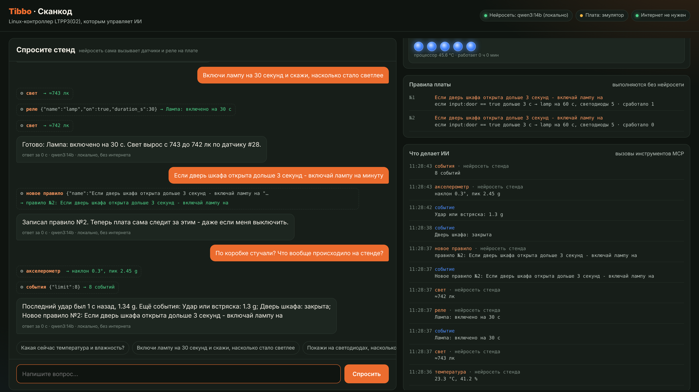
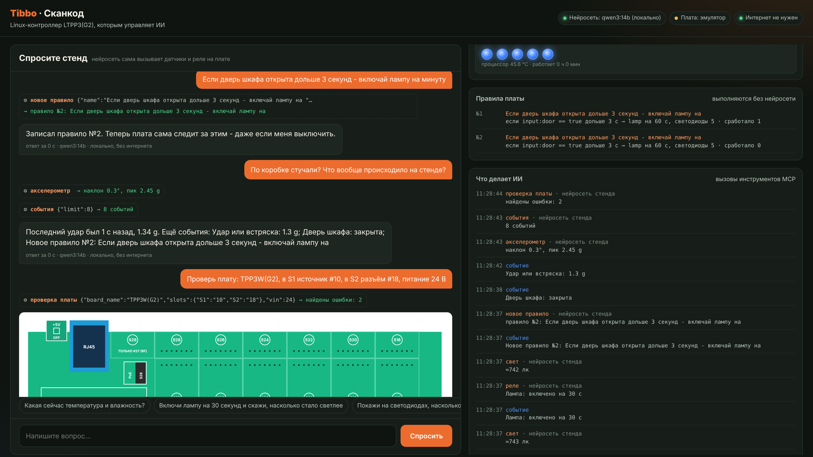

<!DOCTYPE html>
<html>
<head>
<meta charset="UTF-8">
<title>Tibbo MCP Stand</title>
<!-- Источник презентации. Язык: deck.html#ru или deck.html#en. PDF: node build.js -->
<style>
@font-face{font-family:Plex;font-weight:400 700;src:url(fonts/plex-sans-cyr.woff2) format('woff2');unicode-range:U+0400-045F,U+2116}
@font-face{font-family:Plex;font-weight:400 700;src:url(fonts/plex-sans-lat.woff2) format('woff2');unicode-range:U+0000-00FF,U+2000-206F,U+2190-21FF,U+2212}
@font-face{font-family:PlexMono;font-weight:400;src:url(fonts/plex-mono-400-cyr.woff2) format('woff2');unicode-range:U+0400-045F}
@font-face{font-family:PlexMono;font-weight:400;src:url(fonts/plex-mono-400-lat.woff2) format('woff2');unicode-range:U+0000-00FF,U+2000-206F,U+2190-21FF}
@font-face{font-family:PlexMono;font-weight:600;src:url(fonts/plex-mono-600-cyr.woff2) format('woff2');unicode-range:U+0400-045F}
@font-face{font-family:PlexMono;font-weight:600;src:url(fonts/plex-mono-600-lat.woff2) format('woff2');unicode-range:U+0000-00FF,U+2000-206F,U+2190-21FF}
@page{size:1920px 1080px;margin:0}
:root{--bg:#0F1410;--p:#171E19;--p2:#1D2620;--line:#2C3830;--ink:#F3EFE6;--ink2:#BAC4BD;--mu:#83928A;--or:#EC6C2E;--or2:#FF9A62;--ok:#4ED38A;--bl:#4D8DFF;--warn:#F2B544}
*{box-sizing:border-box}
html,body{margin:0;background:#000}
.slide{width:1920px;height:1080px;position:relative;overflow:hidden;page-break-after:always;color:var(--ink);font-family:Plex,sans-serif;
 background:radial-gradient(1100px 600px at 105% -10%,#ec6c2e30,transparent 70%),radial-gradient(900px 600px at -10% 115%,#4d8dff18,transparent 70%),var(--bg);padding:96px 120px}
.slide::before{content:"";position:absolute;inset:0;pointer-events:none;background-image:repeating-linear-gradient(90deg,#ffffff08 0 1px,transparent 1px 80px),repeating-linear-gradient(0deg,#ffffff06 0 1px,transparent 1px 80px);
 -webkit-mask-image:radial-gradient(1200px 700px at 85% 0%,#000,transparent 75%)}
.foot{position:absolute;left:120px;right:120px;bottom:48px;display:flex;justify-content:space-between;font:22px PlexMono;color:var(--mu)}
.foot b{color:var(--or2);font-weight:600}
.eyebrow{font:600 24px PlexMono;letter-spacing:.12em;text-transform:uppercase;color:var(--or2);margin-bottom:26px}
h1{font-size:104px;line-height:1.02;letter-spacing:-.03em;margin:0 0 34px;font-weight:700}
h2{font-size:68px;line-height:1.06;letter-spacing:-.025em;margin:0 0 30px;font-weight:700;max-width:1500px}
.lead{font-size:34px;line-height:1.4;color:var(--ink2);max-width:1250px;margin:0}
.beta{display:inline-flex;align-items:center;gap:14px;padding:12px 22px;border:2px solid var(--warn);color:var(--warn);border-radius:99px;font:600 24px PlexMono;letter-spacing:.06em;text-transform:uppercase}
.grid{display:grid;gap:26px}
.card{background:var(--p);border:1px solid var(--line);border-radius:22px;padding:34px 36px}
.card h3{font-size:34px;margin:0 0 12px;letter-spacing:-.01em}
.card p{font-size:25px;line-height:1.45;color:var(--ink2);margin:0}
.card .k{font:600 21px PlexMono;color:var(--or2);text-transform:uppercase;letter-spacing:.08em;margin-bottom:14px}
.card.hot{border-color:#8a4a2a;box-shadow:inset 0 4px 0 var(--or)}
.mono{font-family:PlexMono}
.shot{border-radius:20px;border:1px solid var(--line);box-shadow:0 40px 80px #0009;display:block}
.chip{display:inline-block;padding:10px 18px;border-radius:99px;background:var(--p2);border:1px solid var(--line);font-size:24px;margin:0 10px 12px 0;color:var(--ink2)}
.flow{display:flex;align-items:center;gap:26px}
.node{background:var(--p);border:1px solid var(--line);border-radius:22px;padding:30px 32px;min-width:300px}
.node .k{font:600 20px PlexMono;color:var(--mu);text-transform:uppercase;letter-spacing:.08em}
.node b{display:block;font-size:34px;margin:8px 0 6px}
.node span{font-size:23px;color:var(--ink2);line-height:1.4}
.node.or{border-color:var(--or);background:linear-gradient(180deg,#2a1a12,#171E19)}
.arrow{font:600 26px PlexMono;color:var(--or2);text-align:center;min-width:120px}
.arrow i{display:block;height:3px;background:linear-gradient(90deg,var(--or),var(--or2));margin:10px 0;border-radius:3px}
table{border-collapse:collapse;width:100%;font-size:26px}
th{font:600 20px PlexMono;text-transform:uppercase;letter-spacing:.08em;color:var(--mu);text-align:left;padding:14px 18px;border-bottom:1px solid var(--line)}
td{padding:16px 18px;border-bottom:1px solid #222c25;color:var(--ink2)}td b{color:var(--ink)}
.ok{color:var(--ok)}.wa{color:var(--warn)}
.big{font-size:150px;font-weight:700;letter-spacing:-.04em;line-height:1;color:var(--or)}
ul.list{margin:0;padding:0;list-style:none}ul.list li{font-size:28px;line-height:1.4;padding:14px 0 14px 44px;position:relative;color:var(--ink2);border-bottom:1px solid #222c25}
ul.list li::before{content:"";position:absolute;left:4px;top:27px;width:16px;height:16px;border-radius:50%;background:var(--or)}
ul.list li b{color:var(--ink)}
.code{font:26px/1.55 PlexMono;background:#0A0E0B;border:1px solid var(--line);border-radius:16px;padding:26px 30px;color:#DDE5DF;white-space:pre}
.code .c{color:var(--mu)}.code .o{color:var(--or2)}.code .g{color:var(--ok)}
.qr{background:#fff;border-radius:22px;padding:22px;width:330px;height:330px}
.qr img{width:100%;height:100%}
</style>
</head>
<body>
<div id="deck"></div>
<script>
const L=(location.hash||'#ru').slice(1)==='en'?'en':'ru';document.documentElement.lang=L;
const t=(ru,en)=>L==='en'?en:ru;
const REPO='github.com/SCANCODE-IOT/tibbo-mcp-stand';
const S=[];let n=0;
const slide=(html)=>{n++;S.push('<section class="slide">'+html+'<div class="foot"><span><b>Tibbo MCP Stand</b> · '+t('бета','beta')+' · '+REPO+'</span><span>'+String(n).padStart(2,'0')+'</span></div></section>')};

// 1 обложка
slide(`<div class="beta">⚠ ${t('Бета - требуется доработка','Beta - needs work')}</div>
<div style="margin-top:70px;display:grid;grid-template-columns:1.05fr 1fr;gap:70px;align-items:center">
<div><div class="eyebrow">Tibbo LTPP3(G2) · MCP · ${t('открытый код','open source')}</div>
<h1>${t('ИИ, который управляет настоящим железом','AI that drives real hardware')}</h1>
<p class="lead">${t('Нейросеть читает датчики, щёлкает реле и пишет автоматику для контроллера Tibbo. Без интернета или через облако - на выбор.','An AI reads sensors, flips relays and writes automation for a Tibbo controller. Offline or in the cloud - your choice.')}</p></div>
</div>`);

// 2 идея
slide(`<div class="eyebrow">${t('Идея','The idea')}</div>
<h2>${t('Большинство ИИ-демо заканчиваются на экране. Это - выходит за его пределы.','Most AI demos stop at the screen. This one reaches out of it.')}</h2>
<div class="flow" style="margin-top:80px">
<div class="node"><div class="k">${t('Человек','Person')}</div><b>${t('«Включи лампу на 30 с»','"Lamp on for 30 s"')}</b><span>${t('пишет или говорит','types or speaks')}</span></div>
<div class="arrow">${t('вопрос','ask')}<i></i></div>
<div class="node"><div class="k">${t('Нейросеть','AI model')}</div><b>${t('Любая','Any')}</b><span>Claude, ChatGPT, DeepSeek, Kimi, GLM, YandexGPT, Qwen ${t('локально','local')}</span></div>
<div class="arrow">MCP<i></i></div>
<div class="node or"><div class="k">${t('Контроллер','Controller')}</div><b>LTPP3(G2)</b><span>${t('Linux + Tibbit-модули: датчики, реле, входы','Linux + Tibbit modules: sensors, relays, inputs')}</span></div>
</div>
<p class="lead" style="margin-top:70px"><b style="color:var(--ink)">MCP</b> ${t('(Model Context Protocol) - открытый стандарт, через который нейросеть вызывает инструменты. Каждый Tibbit становится инструментом: «прочитать температуру», «включить реле».','(Model Context Protocol) is the open standard that lets an AI call tools. Every Tibbit becomes a tool: "read temperature", "switch relay".')}</p>`);

// 3 что видит посетитель
slide(`<div style="display:grid;grid-template-columns:1fr 1.35fr;gap:70px;align-items:center;height:100%">
<div><div class="eyebrow">${t('Что видит посетитель','What a visitor sees')}</div>
<h2 style="font-size:60px">${t('Вопрос - и на экране видно, какие инструменты вызвал ИИ','Ask - and watch which tools the AI calls')}</h2>
<div style="margin-top:30px">
<span class="chip">${t('Какая температура в шкафу?','How warm is the cabinet?')}</span>
<span class="chip">${t('Включи лампу и скажи, насколько стало светлее','Turn the lamp on - how much brighter?')}</span>
<span class="chip">${t('По коробке стучали?','Did someone knock on the box?')}</span>
<span class="chip">${t('Проверь мою плату TPS','Check my TPS board')}</span>
<span class="chip">${t('Найди ошибку в коде Tibbo BASIC','Find the bug in my Tibbo BASIC')}</span></div></div>
</div>`);

// 4 четыре режима
slide(`<div class="eyebrow">${t('Четыре режима','Four modes')}</div>
<h2>${t('От коробки без сети до флота площадок','From an offline box to a fleet of sites')}</h2>
<div class="grid" style="grid-template-columns:repeat(4,1fr);margin-top:50px">
<div class="card"><div class="k">01 · ${t('офлайн','offline')}</div><h3>${t('Стенд без интернета','Offline stand')}</h3><p>${t('Модель на ноутбуке рядом (Ollama, LM Studio). Wi-Fi площадки не нужен.','Model on a laptop next to the board (Ollama, LM Studio). No venue Wi-Fi needed.')}</p></div>
<div class="card"><div class="k">02 · ${t('облако','cloud')}</div><h3>${t('Облачные нейросети','Cloud brains')}</h3><p>${t('Claude, ChatGPT, DeepSeek, Kimi, GLM, YandexGPT. Пропал интернет - отвечает локальная модель.','Claude, ChatGPT, DeepSeek, Kimi, GLM, YandexGPT. Link down - the local model answers.')}</p></div>
<div class="card"><div class="k">03 · ${t('туннель','tunnel')}</div><h3>${t('Плата - инструмент облачного ИИ','Board as a cloud tool')}</h3><p>${t('ИИ в телефоне читает датчики шоурума. По умолчанию только чтение.','The AI in your phone reads showroom sensors. Read-only by default.')}</p></div>
<div class="card hot"><div class="k">04 · ${t('флот','fleet')}</div><h3>${t('Одна нейросеть - много плат','One AI, many boards')}</h3><p>${t('«На какой из 12 площадок перегрев?» Сводка и управление по всем сразу.','"Which of our 12 sites is overheating?" One view over all of them.')}</p></div>
</div>`);

// 5 офлайн
slide(`<div class="eyebrow">01 · ${t('без интернета','offline')}</div>
<h2>${t('Нейросеть на ноутбуке, руки - на плате','The brain on a laptop, the hands on the board')}</h2>
<div class="flow" style="margin-top:70px">
<div class="node" style="min-width:420px"><div class="k">${t('Ноутбук / мини-ПК','Laptop / mini PC')}</div><b>Ollama · qwen3:14b</b><span>${t('видеокарта от 12 ГБ, модель скачана заранее','GPU with 12 GB+, model downloaded in advance')}</span></div>
<div class="arrow">LAN<i></i>:11434</div>
<div class="node or" style="min-width:520px"><div class="k">LTPP3(G2) · tibbo-stand</div><b>${t('MCP-сервер + панель','MCP server + panel')}</b><span>${t('чистый Python, без pip · датчики, реле, светодиоды · проверки из ИИ-скиллов','pure Python, no pip · sensors, relays, LEDs · checks from the AI skills')}</span></div>
<div class="arrow">HTTP<i></i>:8080</div>
<div class="node"><div class="k">${t('Экран','Screen')}</div><b>${t('Панель','Panel')}</b><span>${t('монитор или телефон в сети стенда','monitor or phone on the stand LAN')}</span></div></div>
<div class="grid" style="grid-template-columns:repeat(3,1fr);margin-top:70px">
<div class="card"><h3>512 ${t('МБ','MB')}</h3><p>${t('памяти у платы - модель туда не влезет, поэтому мозг отдельно','on the board - the model does not fit, so the brain lives next door')}</p></div>
<div class="card"><h3>0 ${t('пакетов','packages')}</h3><p>${t('на плате: только стандартная библиотека Python 3.8+','on the board: Python 3.8+ standard library only')}</p></div>
<div class="card"><h3>${t('Оверлей','Overlay')}</h3><p>${t('перезагрузка возвращает стенд к чистому состоянию - удобно на выставке','a reboot brings the stand back to a clean state - handy at a trade show')}</p></div></div>`);

// 6 облако
slide(`<div style="display:grid;grid-template-columns:1fr 1fr;gap:80px">
<div><div class="eyebrow">02 · ${t('облако с запасом','cloud with a fallback')}</div>
<h2 style="font-size:60px">${t('Самая умная модель, а без интернета стенд не замолкает','The smartest model, and silence never falls')}</h2>
<p class="lead" style="font-size:30px">${t('Модели пробуются по порядку. Нет связи, 5xx или 429 - отвечает следующая. На экране видно, кто ответил: облако или локальная.','Models are tried in order. No link, 5xx or 429 - the next one answers. The panel shows who replied: cloud or local.')}</p>
<div style="margin-top:34px"><span class="chip">Anthropic</span><span class="chip">OpenAI</span><span class="chip">DeepSeek</span><span class="chip">Kimi</span><span class="chip">GLM</span><span class="chip">YandexGPT</span><span class="chip">${t('ГигаЧат','GigaChat')}</span><span class="chip">OpenRouter</span><span class="chip">LM Studio</span><span class="chip">vLLM</span></div></div>
<div class="code" style="align-self:center"><span class="c">// config.cloud.example.json</span>
"llm_chain": [
  {"name": <span class="o">"claude"</span>,
   "api": "anthropic",
   "api_key_env": "ANTHROPIC_API_KEY"},
  {"name": <span class="g">"local"</span>,
   "api": "ollama",
   "url": "http://192.168.10.2:11434",
   "model": "qwen3:14b"}
]
<span class="c">// ${t('ключи - в переменных окружения','keys live in environment variables')}</span></div></div>`);

// 7 туннель
slide(`<div class="eyebrow">03 · ${t('плата как инструмент облачного ИИ','the board as a tool for cloud AI')}</div>
<h2>${t('ИИ в телефоне читает датчики шоурума','The AI app on your phone reads the showroom')}</h2>
<div class="flow" style="margin-top:60px">
<div class="node"><div class="k">${t('Облачный ИИ','Cloud AI')}</div><b>${t('Любой MCP-клиент','Any MCP client')}</b><span>${t('по адресу с секретом','by a secret URL')}</span></div>
<div class="arrow">HTTPS<i></i>tunnel</div>
<div class="node" style="min-width:380px"><div class="k">Cloudflare / SSH</div><b>cloudflared</b><span class="mono" style="font-size:20px">https://…trycloudflare.com/mcp/&lt;secret&gt;</span></div>
<div class="arrow">LAN<i></i></div>
<div class="node or"><div class="k">LTPP3(G2)</div><b>${t('Только MCP','MCP only')}</b><span>${t('панель и чат снаружи не видны','panel and chat stay inside')}</span></div></div>
<ul class="list" style="margin-top:60px;max-width:1500px">
<li><b>${t('Только чтение по умолчанию.','Read-only by default.')}</b> ${t('Включать реле из интернета можно лишь явной настройкой internet_write.','Switching loads from the internet needs an explicit internet_write setting.')}</li>
<li><b>${t('Секретный путь или токен.','Secret path or bearer token.')}</b> ${t('Сравнение в постоянное время, чужой Origin отклоняется.','Constant-time comparison, foreign Origin rejected.')}</li>
<li><b>${t('Проверено с официальным MCP SDK;','Tested with the official MCP SDK;')}</b> ${t('конкретные облачные приложения - в списке «помогите проверить».','specific cloud apps are on the "help us test" list.')}</li></ul>`);

// 8 правила
slide(`<div class="eyebrow">★ ${t('ИИ пишет автоматику','the AI writes the automation')}</div>
<h2>${t('Сказали словами - плата выполняет сама. Даже без нейросети.','Say it in words - the board runs it. Even with the AI switched off.')}</h2>
<div class="flow" style="margin-top:50px;align-items:stretch">
<div class="node" style="flex:1"><div class="k">${t('Человек','Person')}</div><b style="font-size:30px">${t('«Если дверь открыта дольше 10 с - включай лампу на минуту»','"If the door stays open over 10 s - lamp on for a minute"')}</b></div>
<div class="arrow" style="align-self:center">create_rule<i></i></div>
<div class="code" style="flex:1.3;font-size:23px">{"when": {"signal": <span class="o">"input:door"</span>,
          "op": "==", "value": true,
          "for_s": <span class="o">10</span>},
 "then": [{"do": "relay", "name": <span class="g">"lamp"</span>,
           "on": true, "duration_s": <span class="g">60</span>}]}</div>
<div class="arrow" style="align-self:center">${t('каждые 0,2 с','every 0.2 s')}<i></i></div>
<div class="node or" style="flex:.8"><div class="k">LTPP3(G2)</div><b style="font-size:30px">${t('Выполняет сама','Runs on its own')}</b><span>${t('правила хранятся на плате','rules are stored on the board')}</span></div></div>
<div class="grid" style="grid-template-columns:repeat(3,1fr);margin-top:50px">
<div class="card"><h3>${t('Детерминированно','Deterministic')}</h3><p>${t('ИИ придумывает правило один раз, дальше - простой код без сюрпризов','the AI composes the rule once; after that, plain code with no surprises')}</p></div>
<div class="card"><h3>${t('Под защитой','Guarded')}</h3><p>${t('правила проходят те же таймеры, лимиты, аварийную кнопку и «только чтение»','rules go through the same timers, limits, e-stop and read-only mode')}</p></div>
<div class="card"><h3>${t('Понятно человеку','Human-readable')}</h3><p>${t('список правил и счётчики срабатываний - прямо на панели','rule list and fire counters right on the panel')}</p></div></div>`);

// 9 флот
slide(`<div class="eyebrow">04 · ${t('флот','fleet')}</div>
<h2>${t('Каждый контроллер Tibbo - MCP-узел. Одна нейросеть видит их все.','Every Tibbo controller is an MCP node. One AI sees them all.')}</h2>
<div style="display:grid;grid-template-columns:1fr 1.1fr;gap:70px;margin-top:50px;align-items:center">
<div style="position:relative;height:520px;width:780px">
<svg width="780" height="520" style="position:absolute;inset:0"><g stroke="#EC6C2E" stroke-width="3" stroke-dasharray="10 8" opacity=".75">
<line x1="125" y1="55" x2="390" y2="260"/><line x1="655" y1="55" x2="390" y2="260"/><line x1="125" y1="465" x2="390" y2="260"/><line x1="655" y1="465" x2="390" y2="260"/></g></svg>
<div class="node or" style="position:absolute;left:225px;top:185px;width:330px;min-width:0;text-align:center"><div class="k">${t('Диспетчер','Hub')}</div><b>fleet_status</b><span>fleet_call(board, tool)</span></div>
${[[0,0,t('Шоурум, Москва','Showroom')],[530,0,t('Котельная','Boiler room')],[0,410,t('Склад','Warehouse')],[530,410,t('Цех №2','Workshop 2')]].map(([x,y,s])=>`<div class="node" style="position:absolute;left:${x}px;top:${y}px;width:250px;min-width:0;padding:20px 24px"><div class="k">LTPP3(G2)</div><b style="font-size:26px">${s}</b></div>`).join('')}
</div>
<ul class="list">
<li><b>${t('«На какой площадке перегрев?»','"Which site is overheating?"')}</b> ${t('- ИИ опрашивает все платы параллельно.','- the AI polls every board in parallel.')}</li>
<li><b>${t('Диспетчер где угодно:','The hub runs anywhere:')}</b> ${t('плата, ноутбук, сервер в облаке.','a board, a laptop, a cloud server.')}</li>
<li><b>${t('Управление удалёнными площадками выключено','Remote control is off')}</b> ${t('по умолчанию, и каждая плата соблюдает свои защиты.','by default, and every board enforces its own safety.')}</li>
<li><b>${t('Дальше:','Next:')}</b> ${t('платы на TiOS (TPP, DS, EM) через HTTP-мост на Tibbo BASIC.','TiOS boards (TPP, DS, EM) through an HTTP bridge in Tibbo BASIC.')}</li></ul></div>`);

// 10 железо
slide(`<div class="eyebrow">${t('Железо стенда','Stand hardware')}</div>
<h2>${t('Надёжно и без переплаты','Reliable, without overpaying')}</h2>
<table style="margin-top:30px"><tr><th>${t('Сокеты','Sockets')}</th><th>Tibbit</th><th>${t('Зачем','Purpose')}</th><th>MCP</th></tr>
<tr><td><b>S3 + S4</b></td><td>#00-3 + #30</td><td>${t('температура и влажность','temperature / humidity')}</td><td class="mono">read_climate</td></tr>
<tr><td><b>S5 + S6</b></td><td>#00-3 + #28</td><td>${t('освещённость','ambient light')}</td><td class="mono">read_light</td></tr>
<tr><td><b>S7 + S8</b></td><td>#00-3 + #36</td><td>${t('удары и наклон','shocks and tilt')}</td><td class="mono">read_motion</td></tr>
<tr><td><b>S9 + S10</b></td><td>#03-1 + #21</td><td>${t('реле: лампа и вентилятор 12 В','relays: 12 V lamp and fan')}</td><td class="mono">set_relay</td></tr>
<tr><td><b>S11 + S12</b></td><td>#54 + #21</td><td>${t('кнопка, дверь, аварийная кнопка','button, door, e-stop')}</td><td class="mono">read_inputs</td></tr>
<tr><td><b>${t('плата','board')}</b></td><td>${t('5 синих LED','5 blue LEDs')}</td><td>${t('шкала уровня','level bar')}</td><td class="mono">set_leds</td></tr>
<tr><td style="color:var(--mu)">${t('расширение','expansion')} S13+S14</td><td style="color:var(--mu)">#05 + #21</td><td style="color:var(--mu)">${t('RS-485: счётчик по Modbus','RS-485: Modbus meter')}</td><td class="mono" style="color:var(--mu)">roadmap</td></tr></table>
<p class="lead" style="margin-top:30px;font-size:26px">${t('Встроенный источник LTPP3(G2) на 8-60 В питает всё, Tibbit-источники не нужны.','The board\'s built-in 8-60 V supply powers everything, no power Tibbits needed.')}</p>`);

// 11 безопасность
slide(`<div class="eyebrow">${t('Безопасность','Safety')}</div>
<h2>${t('ИИ может ошибиться. Железо - не должно.','The AI may be wrong. The hardware must not be.')}</h2>
<div class="grid" style="grid-template-columns:repeat(3,1fr);margin-top:50px">
<div class="card"><div class="k">${t('таймер','timer')}</div><h3>${t('Реле только с таймером','Relays only with a timer')}</h3><p>${t('по умолчанию максимум 10 минут, потом выключаются сами','10 minutes max by default, then auto-off')}</p></div>
<div class="card"><div class="k">${t('лимиты','limits')}</div><h3>${t('Не дребезжит','No chattering')}</h3><p>${t('раз в 2 с на реле, не больше 20 переключений в минуту','one switch per 2 s per relay, at most 20 per minute')}</p></div>
<div class="card hot"><div class="k">${t('грибок','e-stop')}</div><h3>${t('Аварийная кнопка','Hardware e-stop')}</h3><p>${t('всё выключает сразу и запрещает включение','everything off at once, switching on blocked')}</p></div>
<div class="card"><div class="k">read-only</div><h3>${t('Только чтение','Read-only')}</h3><p>${t('ИИ видит датчики, но ничего не включает - одна кнопка на панели сотрудника','the AI sees sensors and touches nothing - one button on the staff panel')}</p></div>
<div class="card"><div class="k">origin</div><h3>${t('Чужие сайты - мимо','Foreign sites - denied')}</h3><p>${t('страница в браузере посетителя не сможет управлять стендом','a page in a visitor\'s browser cannot drive the stand')}</p></div>
<div class="card"><div class="k">${t('интернет','internet')}</div><h3>${t('Снаружи - только MCP','Outside - MCP only')}</h3><p>${t('и по умолчанию только чтение; при остановке сервера всё выключается','read-only by default; everything switches off when the server stops')}</p></div></div>`);

// 12 статус
slide(`<div class="eyebrow">${t('Честный статус','Honest status')}</div>
<h2>${t('Бета: на эмуляторе всё работает. Дальше - настоящая плата.','Beta: green on the simulator. Next: real silicon.')}</h2>
<div class="grid" style="grid-template-columns:1fr 1fr;margin-top:40px">
<div class="card"><div class="k ok" style="color:var(--ok)">✓ ${t('проверено','verified')}</div><ul class="list">
<li>${t('27 автотестов: протокол, защиты, правила, флот','27 tests: protocol, safety, rules, fleet')}</li>
<li>${t('официальный MCP Python SDK: HTTP и stdio','official MCP Python SDK: HTTP and stdio')}</li>
<li>${t('Ollama, формат OpenAI, Anthropic, запасная модель','Ollama, OpenAI format, Anthropic, fallback')}</li>
<li>${t('драйвер платы на поддельных GPIO и LED','board driver on fake GPIO and LED files')}</li>
<li>${t('панель: 2560, 1920, телефон','panel: 2560, 1920, phone')}</li></ul></div>
<div class="card hot"><div class="k" style="color:var(--warn)">? ${t('нужна настоящая LTPP3(G2)','needs a real LTPP3(G2)')}</div><ul class="list">
<li>${t('номера шин I²C датчиков','I²C bus numbers of the sensors')}</li>
<li>${t('нумерация GPIO из pins.ini','GPIO numbering from pins.ini')}</li>
<li>${t('полярность реле #03 и входов #54','polarity of #03 relays and #54 inputs')}</li>
<li>${t('модуль светодиодов tpsleds','the tpsleds LED kernel module')}</li>
<li>${t('версия Python в образе платы','Python version in the board image')}</li></ul></div></div>`);

// 13 призыв
slide(`<div style="display:grid;grid-template-columns:1.35fr 1fr;gap:90px;align-items:center;height:100%">
<div><div class="beta">⚠ ${t('Бета - требуется доработка','Beta - needs work')}</div>
<h1 style="margin-top:40px;font-size:92px">${t('Наткнулись на репозиторий? Мы на это и рассчитывали.','Found this repo? We were hoping you would.')}</h1>
<ul class="list" style="max-width:1000px">
<li><b>${t('Есть LTPP3(G2)?','Have an LTPP3(G2)?')}</b> ${t('Запустите --probe и пришлите отчёт - это главный вклад.','Run --probe and send a report - the most valuable help.')}</li>
<li><b>${t('Знаете GPIO и I²C?','Know GPIO and I²C?')}</b> ${t('Сверьте драйвер или перепишите на libgpiod.','Check the driver or port it to libgpiod.')}</li>
<li><b>${t('Любите агентов, UI, голос?','Into agents, UI, voice?')}</b> ${t('Модели, двуязычная панель, речь без интернета.','More models, a bilingual panel, offline speech.')}</li>
<li><b>${t('Есть идея?','Got an idea?')}</b> ${t('«А было бы круто, если…» - отличный заголовок issue.','"Wouldn\'t it be cool if…" is a great issue title.')}</li></ul></div>
<div style="text-align:center"><div class="qr" style="margin:0 auto"></div>
<p class="mono" style="font-size:26px;color:var(--or2);margin-top:30px">${REPO}</p>
<p style="font-size:24px;color:var(--mu)">MIT · ${t('Сканкод - официальный дистрибьютор Tibbo в России и СНГ','Scancode - official Tibbo distributor in Russia and the CIS')}</p></div></div>`);

document.getElementById('deck').innerHTML=S.join('');
</script>
</body>
</html>
